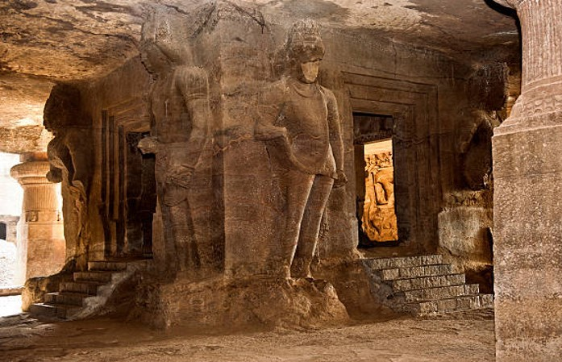
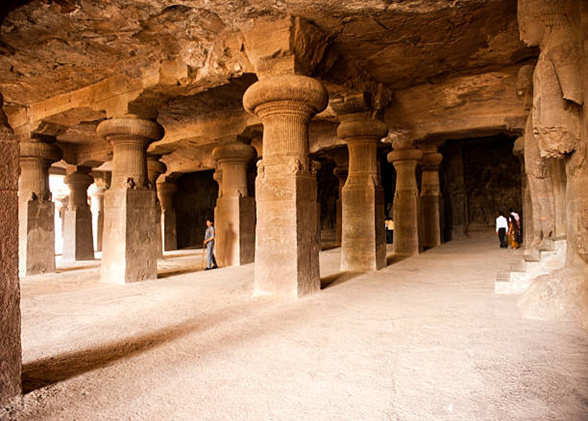
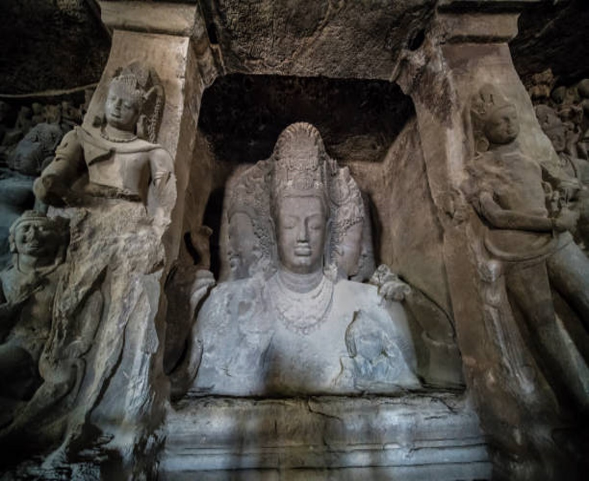

Designated by UNESCO as a World Heritage Site, the Elephanta Caves are a collection of cave temples predominantly dedicated to the Hindu god Shiva. They are on Elephanta Island, or Gharapuri (literally "the city of caves"), in Mumbai Harbour, 10 kilometres (6.2 mi) east of Mumbai in the Indian state of Mahārāshtra. The island, about 2 kilometres (1.2 mi) west of the Jawaharlal Nehru Port, consists of five Hindu caves, a few Buddhist stupa mounds that date back to the 2nd century BCE, and two Buddhist caves with water tanks. The Elephanta Caves contain rock cut stone sculptures, mostly in high relief, that show syncretism of Hindu and Buddhist ideas and iconography. The caves are hewn from solid basalt rock. Except for a few exceptions, much of the artwork is defaced and damaged. The main temple's orientation as well as the relative location of other temples are placed in a mandala pattern. The carvings narrate Hindu mythologies, with the large monolithic 20 feet (6.1 m) Trimurti Sadashiva (three-faced Shiva), Nataraja (Lord of dance) and Yogishvara (Lord of Yoga) being the most celebrated.
Timing : It is closed on Mondays and the Elephanta Caves timings are from 9am to 5pm.


